Savoir-faire
Voici quelques exemples de mise en page, pensés pour illustrer la diversité des rendus possibles selon votre métier. Ce sont des maquettes de démonstration, pas des sites de clients existants : elles servent à discuter concrètement de vos goûts avant de concevoir votre propre site vitrine.
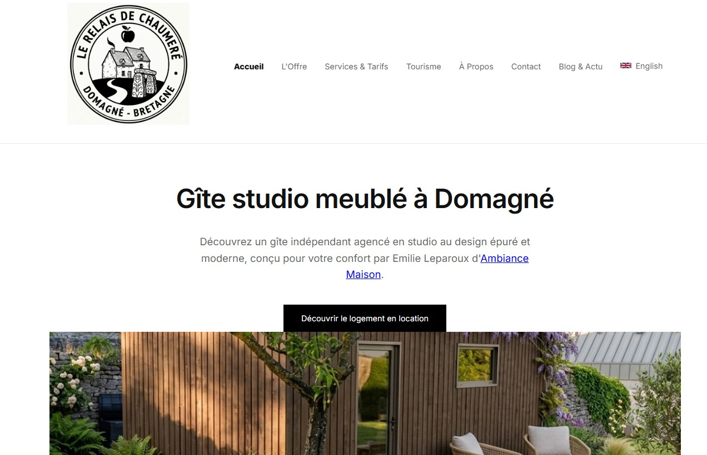
J'ai fait le site internet du gîte Le Relais de Chauméré pour qu'il soit super utile. Au lieu de dessiner une page fixe et un peu ennuyeuse, j'ai tout réglé pour que l'on voie les chambres libres et les bonnes infos tout de suite, en direct. J'ai bien écrit le code pour que Google trouve facilement la maison dans la région et pour que réserver devienne un jeu d'enfant. C'est magique : ce n'est pas seulement une jolie image sur un écran, c'est une vraie machine informatique qui aide les propriétaires à remplir toutes les cases de leur calendrier.
Voir le Site.

J'ai fait le site internet pour la boulangerie de Domagné en évitant d'en faire une page fixe et un peu morte. Au lieu de seulement montrer des photos, j'ai fabriqué un outil qui montre le travail du boulanger : le site explique le secret du bon levain et de la cuisson au feu de bois pour rassurer les clients sur la qualité. J'ai bien réglé la machine pour que Google trouve tout de suite la boutique dans le village. Ce n'est pas juste une jolie vitrine, c'est un super outil pour aider les habitués à commander leur pain et leurs gâteaux tous les jours.
voir le site.

J'ai fait le site internet pour un plombier de la ville, mais j'ai voulu bien travailler pour qu'il marche super bien. Au lieu de dessiner une page fixe et toute simple, j'ai tout réglé pour que le site change tout seul : il montre les heures d'ouverture en direct pour rassurer les gens s'ils ont une fuite d'eau, et j'ai bien écrit le code pour que Google comprenne l'adresse et le métier du plombier. C'est magique : ce n'est pas juste une jolie image, c'est une vraie machine pour recevoir plein d'appels.
Voir le Site.
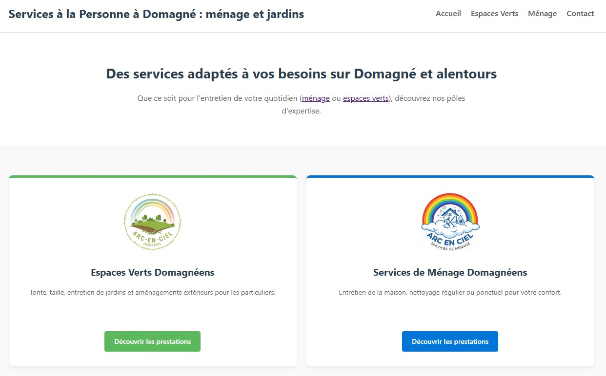
J'ai fait le site d'Arc-en-Ciel Services pour changer une simple page en une vraie machine à trouver des clients. En plus des jolis dessins, j'ai fabriqué un code spécial pour que Google montre bien tous les métiers de l'entreprise à Domagné. Chaque bouton est pensé pour aider le visiteur, comme la liste claire des activités ou l'explication des aides financières pour payer moins cher. Ce n'est pas seulement un écran sur l'ordinateur, c'est un outil d'artisan du numérique qui aide à recevoir les messages des familles et à être bien visible dans toute la ville.
Voir le Site.
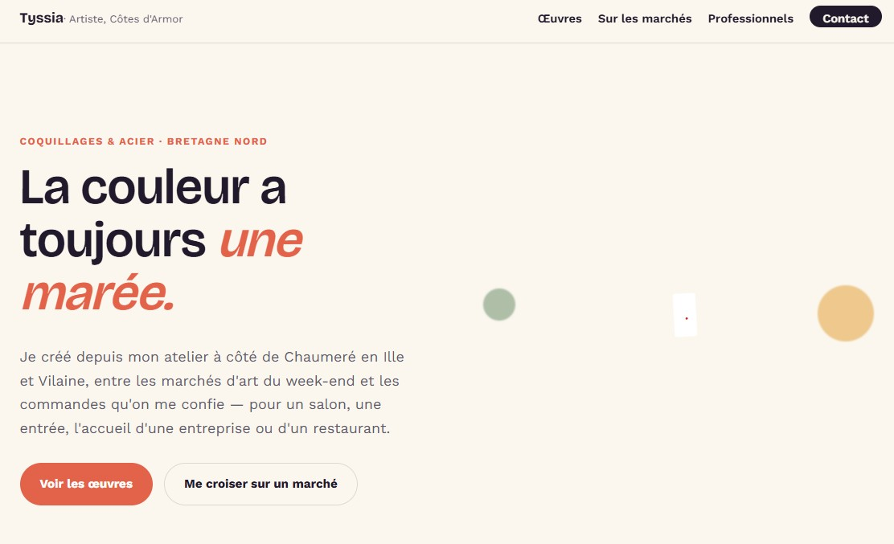
J'ai fait ce site pour Tyssia, une artiste qui fabrique des sculptures, pour l'aider à devenir très connue. Avant, elle donnait juste son numéro sur les marchés ; maintenant, son site rassemble tout : ses rendez-vous, ses jolies créations et surtout une boîte à messages intelligente pour trier les questions des gens et des magasins. Résultat : elle ne perd plus de temps à répéter la même chose et elle a une super base pour travailler comme une pro, même quand elle n'est pas installée derrière sa table.
Voir le Site.
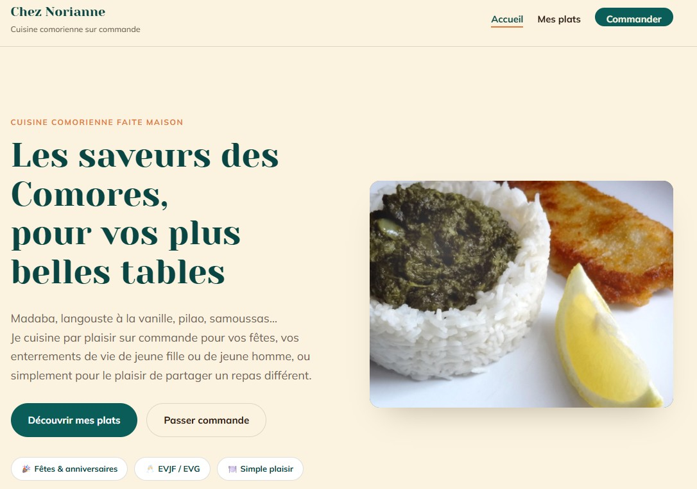
J'ai fait le site Chez Norianne pour qu'il devienne une vraie machine à commandes, pas juste une jolie page pour faire beau. Au lieu de laisser chercher les gens, j'ai rangé chaque plat pour que les prix et les ingrédients se voient en un clin d'œil. Résultat : les gourmands trouvent leur bonheur sans réfléchir, et vous passez moins de temps à parler au téléphone. Ce n'est pas juste un écran, c'est un outil qui travaille pour vous et qui aide les clients à réserver en un clic.
Voir le Site.
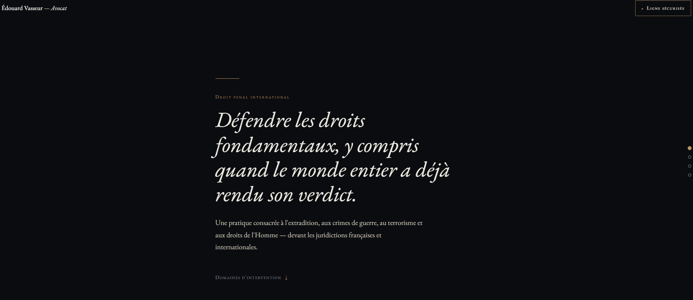
J'ai conçu le site de Maître Édouard Vasseur pour qu'il agisse comme un filtre à urgences et un gage de haute confidentialité, pas comme une simple plaquette vitrine. Plutôt que de noyer le justiciable sous des textes de loi, j'ai structuré les quatre domaines clés pour que la compétence de défense et la ligne d'astreinte sécurisée sautent aux yeux immédiatement. Résultat : les clients en détresse ou recherchés internationale trouvent le canal de contact direct sans hésitation, et vous évitez les appels non qualifiés sur votre temps de cabinet. Ce n'est pas juste une page web, c'est un protocole d'accès sécurisé qui travaille pour votre réputation et assiste vos dossiers critiques en un clic.
Voir le Site.
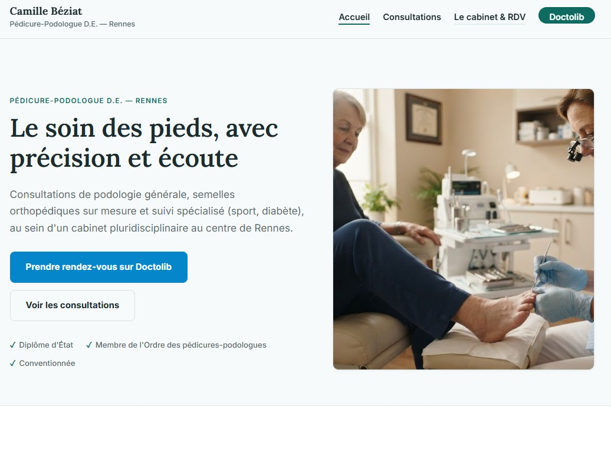
J'ai rangé le site de Camille Béziat pour qu'il aide bien les malades, pas comme un simple carnet d'adresses. Au lieu de mettre plein de mots trop compliqués, j'ai montré les cinq façons de soigner les pieds et les bonnes infos au centre de Rennes pour rassurer tout le monde. Résultat : les gens trouvent leur bobo et cliquent vers le site Doctolib pour prendre rendez-vous facilement, ce qui donne beaucoup moins de travail au téléphone du bureau. Ce n'est pas seulement une affiche pour les pieds, c'est une vraie machine de docteur qui organise les visites tous les jours.
Voir le Site.
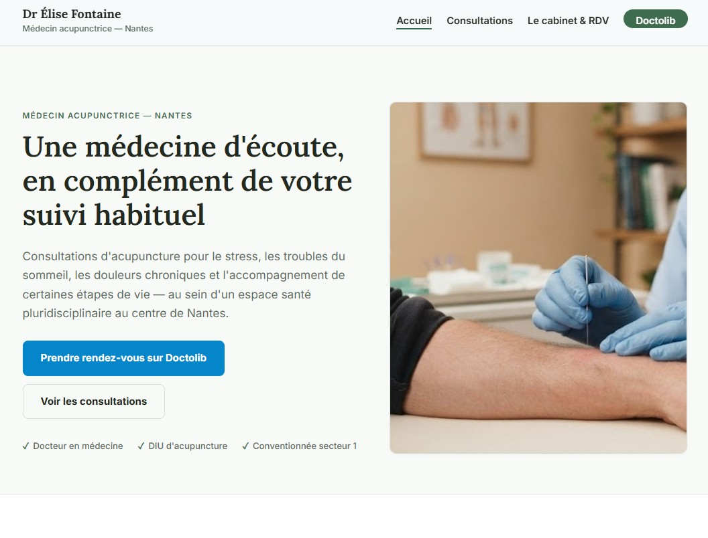
J'ai fait le site du Dr Élise Fontaine, qui soigne avec des aiguilles à Nantes, pour guider clairement les malades vers les rendez-vous. Le style utilise un vert jade léger pour apporter du calme et du soin. La page d'accueil liste les petits problèmes comme le stress, le sommeil ou les douleurs, en disant bien que cela complète le médecin classique. Les infos pratiques donnent l'adresse, le trajet en tram et les horaires. Pour faire simple, un bouton très visible renvoie directement le patient vers le site Doctolib.
Voir le Site.
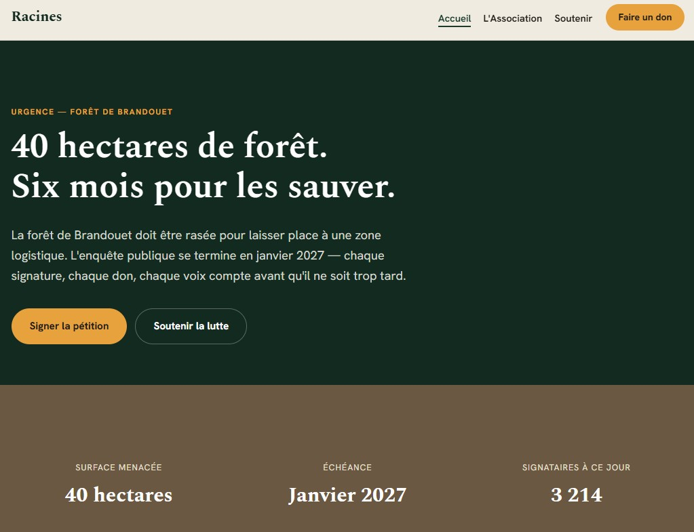
J'ai fait le site de l'association Racines pour qu'il aide tout le monde à se rassembler, pas comme un simple journal de combats. Au lieu de mettre de longs discours compliqués, j'ai montré les quatre façons d'agir et les dates importantes de la justice pour faire bouger les citoyens. Résultat : les amis de la nature comprennent l'urgence, signent la grande feuille et s'inscrivent de façon protégée en quelques secondes, ce qui donne plus de force à vos actions dans les dossiers. Ce n'est pas seulement une affiche, c'est une vraie machine de défense pour vos combats de la Terre.
Voir le Site.
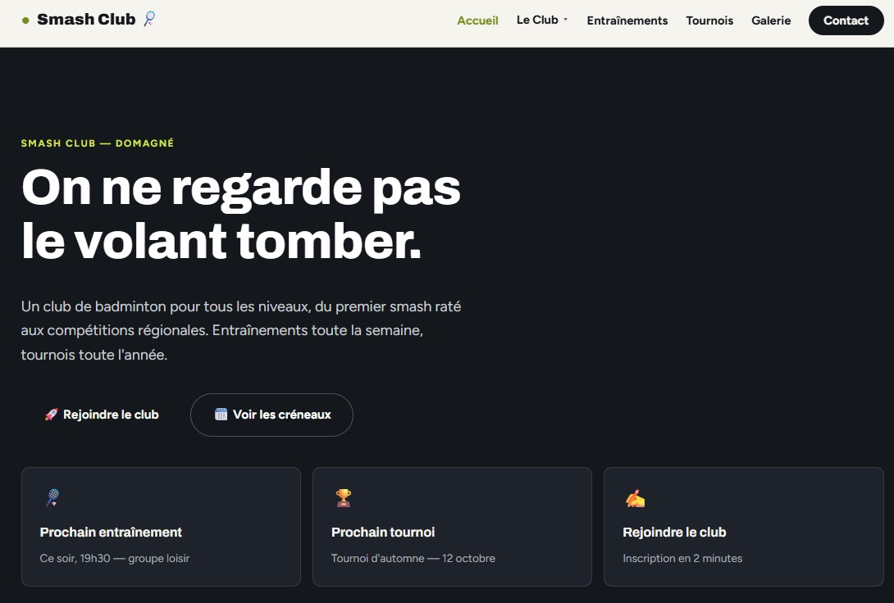
Pour le Smash Club de Domagné, j'ai fait un site tout simple qui va droit au but pour attirer de nouveaux joueurs. Le style utilise le noir et le jaune-vert d'un vrai volant, avec du orange pour bien voir les tournois. Un système de tri permet de trouver son heure de jeu par niveau et par jour en un seul clic. Pour s'inscrire ou poser une question, les cases du formulaire changent toutes seules selon le choix du visiteur. Enfin, la technique reste très légère pour que les pages s'ouvrent super vite.
Voir le Site.
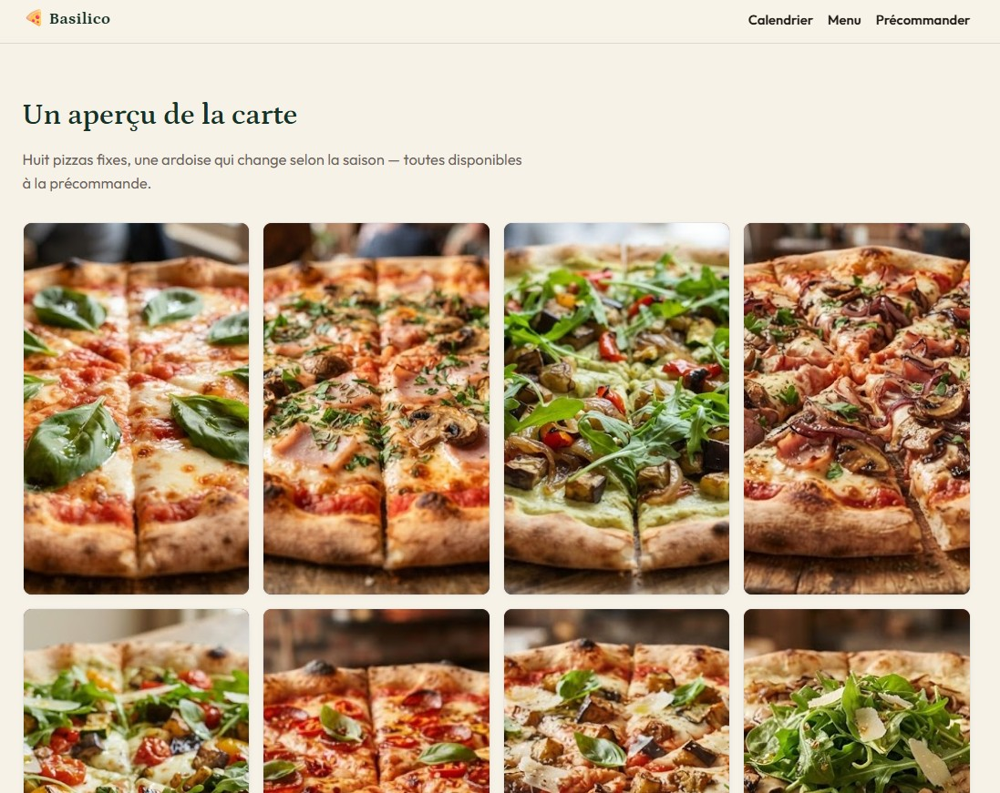
J'ai rangé le site de Basilico pour simplifier la commande de bonnes pizzas du coin et sans viande. Le style utilise des couleurs de la nature (sapin, tomate, crème) qui font penser aux produits frais et à l'Italie. Un système de tri par jour montre tout de suite où est garé le camion (Domagné, Châteaubourg ou Rennes) avec un bouton de carte. Le client peut réserver ses pizzas en avance et choisir son heure pour éviter de faire la queue. Sur le téléphone, un bouton reste collé en bas de l'écran pour commander vite avec son pouce.
Voir le Site.
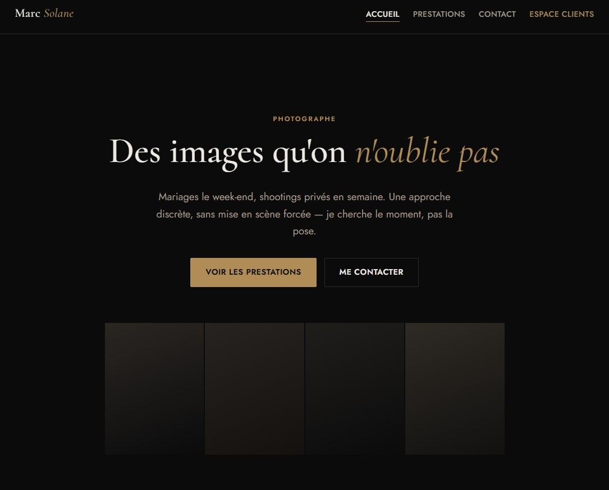
J'ai fait le site de Marc Solane, un photographe qui prend des photos de mariages et de fêtes à Rennes. Pour rappeler l'univers des studios photos, j'ai choisi un style appelé « Chambre noire » : un fond très sombre avec des touches de couleur laiton et de jolies lettres élégantes. Le site contient une boîte pour lui écrire, la liste de ses prix et un espace protégé par un code secret pour donner les images aux clients. Un robot informatique spécial a aussi été fabriqué pour l'aider à créer ses albums de photos sur internet en quelques clics.
Voir le Site.
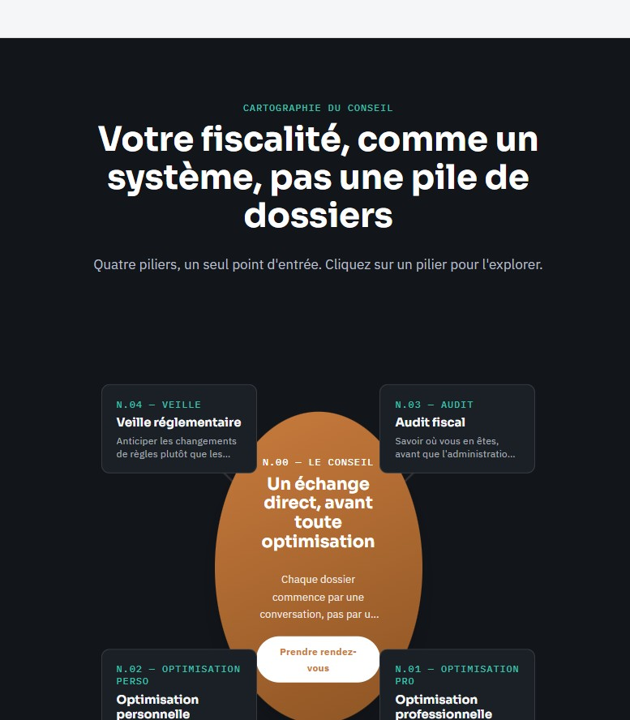
J'ai fait le site internet d'Antoine Reverdy, un grand spécialiste des impôts. Le cœur du projet s'appuie sur un centre de boutons magiques fait d'abord pour les téléphones. Sur les grands écrans, le dessin s'ouvre comme une carte de l'espace en lignes de code où quatre gros blocs tournent autour du texte principal. Quand on clique, des fenêtres cachées s'ouvrent sur les côtés pour expliquer ses métiers (calculs, économies, surveillance). Pour aider tout le monde à bien lire, une version toute simple avec du texte normal remplace la carte spatiale.
Voir le Site.
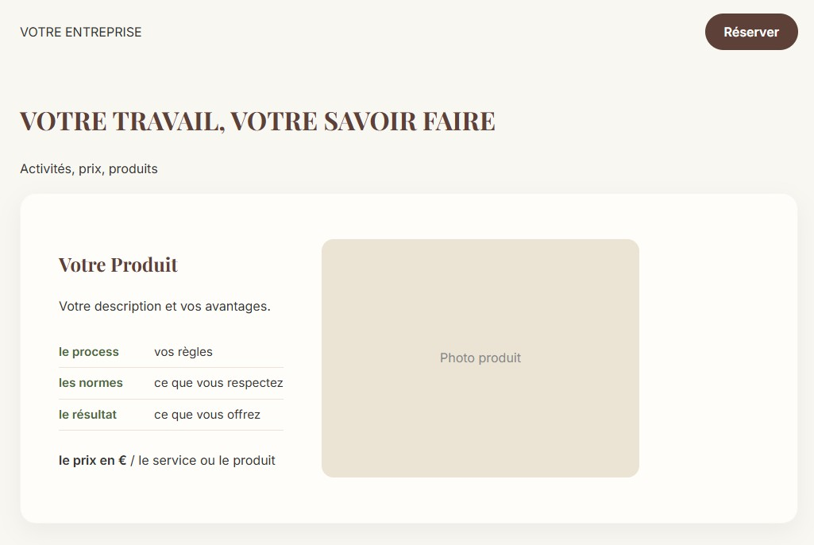
Artisan, travailleur ou commerçant : je ne vends pas du code, je vends du travail bien fait et rapide. Mon rôle est de changer votre métier en une force pour grandir. Grâce à un rangement bien clair, vos clients trouvent vos grandes informations sans aucun problème, ce qui vous évite de perdre du temps au téléphone. Je règle aussi la machine pour vous placer devant les autres boulangers ou plombiers quand les gens cherchent votre force. Si vous perdez des clients parce qu'ils ne vous trouvent pas ou ne comprennent pas vos textes, nous devons travailler ensemble. Parlons de ce qui coince pour le réparer pour toujours.
me contacter.
Ce qui s'adapte
La structure générale reste simple et efficace, mais plusieurs éléments changent d'un métier à l'autre.
Ces exemples ne sont qu'un point de départ pour la discussion. Chaque site est conçu sur mesure, quel que soit votre métier.
Ce site utilise des cookies de mesure d'audience (Google Analytics). Vous pouvez accepter ou refuser ces traceurs.